CODING AGENTS AS PIXEL WORLD MODELS
traex/GPT-6.1-Sol · 0076
点击播放 · 原生 RGB 像素
逐轮保存的候选
回放视频、检查图与代码变化。
每份候选均可单独播放。实际图片检查记录在下方工具轨迹中。
候选 01播放与检查图
点击播放 · 原生 RGB 像素
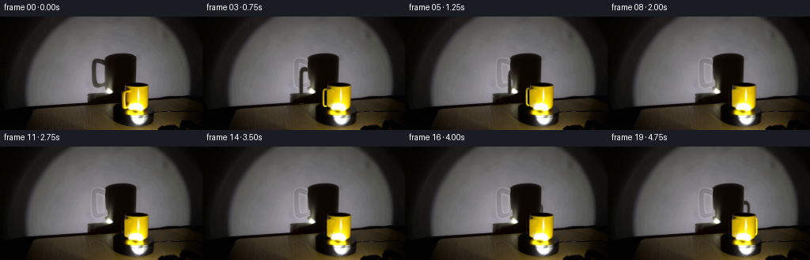
展开代码变化
--- 上一保存版本
+++ 本次保存版本
@@ -0,0 +1,199 @@
+from pathlib import Path
+import numpy as np
+from PIL import Image
+import cv2
+from scipy.ndimage import gaussian_filter, map_coordinates
+from artifact_io import save
+
+ROOT=Path(__file__).resolve().parent
+orig=np.asarray(Image.open(ROOT/'first_frame.png').convert('RGB'))
+H,W=144,256
+S=4
+HH,WW=H*S,W*S
+hi=cv2.resize(orig,(WW,HH),interpolation=cv2.INTER_CUBIC).astype(float)
+Y,X=np.mgrid[:HH,:WW]/S
+
+# Restore just the wall occupied by the initial handle's shadow. The mug's
+# cylindrical shadow, the illumination and all the rest of the set stay fixed.
+def polygon(points):
+ m=np.zeros((HH,WW),np.uint8)
+ cv2.fillPoly(m,[np.round(np.array(points)*S).astype(np.int32)],255)
+ return m.astype(float)/255
+wallarea=(X>99)&(X<133)&(Y>43)&(Y<97)
+shpoly=polygon([(119,51),(129,52),(135,55),(136,88),(130,91),(119,93),(114,88),(113.8,62),(115,55)])
+valid=wallarea&(shpoly<.1)&~((X>131)&(Y>50))
+x=(X-116)/20;y=(Y-72)/25
+terms=[np.ones_like(X),x,y,x*x,x*y,y*y,x*x*x,x*x*y,x*y*y,y*y*y]
+A=np.stack([t[valid] for t in terms],1)
+coeff=np.linalg.lstsq(A,hi[valid],rcond=None)[0]
+wall=sum(t[...,None]*c for t,c in zip(terms,coeff))
+# A little of the source wall's optical texture, without inventing objects.
+shift=cv2.resize(orig,(WW,HH),interpolation=cv2.INTER_CUBIC).astype(float)
+noise=shift-np.stack([gaussian_filter(shift[...,c],2*S) for c in range(3)],2)
+wall=np.clip(wall+noise*.5,0,255)
+wallmask=gaussian_filter(shpoly,.45*S)
+# The existing shadow of the body occludes the handle shadow.
+bodyshadow=polygon([(133.7,54),(133,60),(133.3,71),(134,79),(139,83),(142,86),(141.3,93),(136.3,98),(111,100),(110.4,109.7),(131,109.8),(147,108.8),(160,106),(172,104),(172,53),(168,49.5),(159,46.8),(144,46.8),(137,48.4),(134.5,51)])
+wallmask*=1-bodyshadow
+background=hi*(1-wallmask[...,None])+wall*wallmask[...,None]
+
+# Mask for the symmetric cylindrical vessel. Its photographic pixels supply
+# the glazing, bright specular stripe, open top and low spotlight reflection.
+r=14.9;cx=171.9;cy=115.0;q=.21;height=28.6
+bx=X-cx
+bodymask=((abs(bx)<r)&(Y>=86.7)&(Y<=112.6))|(((bx/r)**2+((Y-86.7)/3.15)**2)<1)|(((bx/r)**2+((Y-112.6)/4.2)**2)<1)
+bodyalpha=gaussian_filter(bodymask.astype(float),.25*S)
+# Eliminate the old visible handle. The rear surface is its existing dark
+# shadow; reconstruct the small strip of cylindrical yellow glaze beneath it.
+oldhandle=polygon([(164,91),(160,92.3),(157,93),(154.6,95),(153.8,99),(154.0,113.2),(154.8,116.8),(158.7,118.2),(162.9,115.0),(165.0,109),(164.6,95)])
+oldhandle=gaussian_filter(oldhandle,.45*S)
+behind=background.copy()
+# Interpolate dark background locally, not from the nearby yellow mug.
+for j in range(HH):
+ yy=j/S
+ l=int(151*S)
+ v=background[j,max(0,l-2*S):l].mean(0)
+ if yy>=110:
+ v=background[j,149*S:152*S].mean(0)
+ behind[j,152*S:167*S]=v
+# Smooth ceramic texture on the part hidden by the original handle.
+shade=np.clip((X-(cx-r))/10,0,1)
+ceram=np.stack([181+48*shade,146+48*shade,1+3*shade],axis=2)
+ceram*= (1-.10*np.exp(-((Y-91)/3.5)**2))[...,None]
+# The stationary floor-level white reflection is preserved from nearby glaze.
+ref=np.exp(-((X-167)/6)**2-((Y-113.0)/3)**2)
+ceram=ceram*(1-ref[...,None])+np.array([255,254,232])*ref[...,None]
+repair=behind*(1-bodyalpha[...,None])+ceram*bodyalpha[...,None]
+clean=background*(1-oldhandle[...,None])+repair*oldhandle[...,None]
+
+# Make a rounded D-shaped tubular handle in the mug's radial vertical plane.
+# Local curves are cubic Beziers; the attachment points sit on the cylinder.
+segments=[[(14,22.5),(16,22.7),(18.7,23.2),(19.1,20.5)],
+ [(19.1,20.5),(19.3,16),(19.3,8),(19.1,4)],
+ [(19.1,4),(18.9,.9),(16,.5),(14,2.0)]]
+path=[]
+for seg in segments:
+ a,b,c,d=np.array(seg,float)
+ for t in np.linspace(0,1,35,endpoint=False):
+ path.append((1-t)**3*a+3*(1-t)**2*t*b+3*(1-t)*t*t*c+t**3*d)
+path.append(np.array(segments[-1][-1],float));path=np.array(path)
+tan=np.gradient(path,axis=0);tan/=np.linalg.norm(tan,axis=1)[:,None]
+rings=16
+phi0=np.deg2rad(-150)
+
+def mesh(phi):
+ u=np.array([np.cos(phi),np.sin(phi),0.])
+ v=np.array([-np.sin(phi),np.cos(phi),0.])
+ verts=[];normals=[]
+ for (R,z),(tr,tz) in zip(path,tan):
+ N=u*tz+np.array([0,0,-tr])
+ for a in np.arange(rings)*2*np.pi/rings:
+ n=N*np.cos(a)+v*np.sin(a)
+ radius=1.18
+ verts.append(u*R+np.array([0,0,z])+radius*n)
+ normals.append(n)
+ return np.array(verts),np.array(normals)
+verts0,normals0=mesh(phi0)
+
+def project(v):
+ return np.stack([cx+v[:,0],cy-v[:,2]-q*v[:,1]],1)
+uv0=project(verts0)
+triangles=[]
+for i in range(len(path)-1):
+ for k in range(rings):
+ a=i*rings+k;b=i*rings+(k+1)%rings;c=(i+1)*rings+k;d=(i+1)*rings+(k+1)%rings
+ triangles.extend([(a,b,c),(b,d,c)])
+triangles=np.array(triangles)
+light=np.array([35,-70,4.0])
+
+# Perspective light projection onto the wall, followed by its fixed camera
+# projection. It yields a magnified handle and a stationary cylinder shadow.
+def shadowproject(v):
+ t=(90-light[1])/(v[:,1]-light[1])
+ p=light+(v-light)*t[:,None]
+ center=light+(np.array([0,0,0])-light)*(160/70)
+ return np.stack([152+.61*(p[:,0]-center[0]),111.8-.96*p[:,2]],1)
+
+def render(phi):
+ verts, normals=mesh(phi)
+ uv=project(verts)
+ depth=verts[:,1]-q*verts[:,2]
+ # Ceramic diffuse and narrow white reflections from the low light source.
+ lv=light-verts;lv/=np.linalg.norm(lv,axis=1)[:,None]
+ diffuse=np.maximum(np.sum(normals*lv,axis=1),0)
+ camera=np.array([0,-1,.21]);camera/=np.linalg.norm(camera)
+ halfv=lv+camera;halfv/=np.linalg.norm(halfv,axis=1)[:,None]
+ spec=np.maximum(np.sum(normals*halfv,axis=1),0)**24
+ colors=np.array([246,212,1])[None,:]*(.40+.60*diffuse[:,None])+spec[:,None]*np.array([165,176,175])
+ light0=light-verts0;light0/=np.linalg.norm(light0,axis=1)[:,None]
+ diffuse0=np.maximum((normals0*light0).sum(1),0)
+ relative=(.48+.52*diffuse)/(.48+.52*diffuse0)
+ rgba=np.zeros((HH,WW,4),float);zbuf=np.full((HH,WW),1e10)
+ for tri in triangles:
+ pts=uv[tri]*S
+ xmin=max(int(np.floor(pts[:,0].min())),0);xmax=min(int(np.ceil(pts[:,0].max())),WW-1)
+ ymin=max(int(np.floor(pts[:,1].min())),0);ymax=min(int(np.ceil(pts[:,1].max())),HH-1)
+ if xmax<xmin or ymax<ymin: continue
+ xx,yy=np.meshgrid(np.arange(xmin,xmax+1)+.5,np.arange(ymin,ymax+1)+.5)
+ a,b,c=pts
+ den=(b[1]-c[1])*(a[0]-c[0])+(c[0]-b[0])*(a[1]-c[1])
+ if abs(den)<1e-7: continue
+ wa=((b[1]-c[1])*(xx-c[0])+(c[0]-b[0])*(yy-c[1]))/den
+ wb=((c[1]-a[1])*(xx-c[0])+(a[0]-c[0])*(yy-c[1]))/den
+ wc=1-wa-wb
+ weights=np.stack([wa,wb,wc],-1)
+ zd=weights@depth[tri]
+ sel=(weights.min(-1)>=-.0001)&(zd<zbuf[ymin:ymax+1,xmin:xmax+1])
+ # Test front cylinder intersections in the same oblique camera rays.
+ dx=xx/S-cx
+ df=-np.sqrt(np.maximum(0,r*r-dx*dx))
+ zz=cy-yy/S-q*df
+ cyl= (np.abs(dx)<r)&(zz>=0)&(zz<=height)
+ bodydepth=df-q*zz
+ sel &= ~(cyl&(zd>bodydepth-.15))
+ # top cap
+ dc=(cy-height-yy/S)/q
+ cap=(dx*dx+dc*dc<r*r)&(dc>=df)
+ sel &= ~(cap&(zd>dc-q*height))
+ if not sel.any():continue
+ col=weights@colors[tri]
+ src=weights@uv0[tri]
+ texture=np.stack([map_coordinates(orig[:,:,cc].astype(float),[src[...,1],src[...,0]],order=1,mode='nearest') for cc in range(3)],-1)
+ # Retain photographic ceramic detail where initial projection actually
+ # hits the yellow handle, rather than the hole or the background.
+ yellow=(texture[...,0]>100)&(texture[...,1]>75)&(texture[...,0]>texture[...,2]+45)
+ rel=weights@relative[tri]
+ col[yellow]=.75*texture[yellow]*rel[yellow,None]+.25*col[yellow]
+ rgba[ymin:ymax+1,xmin:xmax+1,:3][sel]=np.clip(col[sel],0,255)
+ rgba[ymin:ymax+1,xmin:xmax+1,3][sel]=1
+ zbuf[ymin:ymax+1,xmin:xmax+1][sel]=zd[sel]
+ sm=np.zeros((HH,WW),np.uint8)
+ suv=shadowproject(verts)*S
+ for tri in triangles:
+ cv2.fillConvexPoly(sm,np.round(suv[tri]).astype(np.int32),255)
+ sm=gaussian_filter(sm.astype(float)/255,.57*S)
+ # Shadow only falls on the wall. Preserve tabletop and its cast shadows.
+ sm*= (Y<111.1-.033*(X-120))
+ sm*=1-bodyshadow
+ sm*=1-bodyalpha
+ # Ambient transmitted room light gives the handle shadow a soft brown tone.
+ shadecol=np.array([43,40,33],float)
+ image=clean*(1-sm[...,None])+shadecol*sm[...,None]
+ a=gaussian_filter(rgba[:,:,3],.16*S)
+ rgb=rgba[:,:,:3]
+ # fill subpixel edge colors before antialiasing
+ for cc in range(3):
+ rgb[:,:,cc]=gaussian_filter(rgb[:,:,cc],.16*S)/np.maximum(a,1e-6)
+ image=image*(1-a[...,None])+rgb*a[...,None]
+ return np.clip(cv2.resize(image,(W,H),interpolation=cv2.INTER_AREA),0,255).astype(np.uint8)
+
+if __name__=='__main__':
+ frames=[orig]
+ # 38 degrees per second, clockwise from above, at fixed real-time cadence.
+ for i in range(1,20):
+ phi=phi0-np.deg2rad(38*i/4)
+ frames.append(render(phi))
+ frames=np.stack(frames).astype(np.uint8)
+ save(frames,ROOT)
+ Image.fromarray(render(phi0)).save(ROOT/'.tmp'/'render_zero.png')
+ Image.fromarray(np.clip(cv2.resize(clean,(W,H),interpolation=cv2.INTER_AREA),0,255).astype(np.uint8)).save(ROOT/'.tmp'/'clean.png')
候选 02播放与检查图
点击播放 · 原生 RGB 像素

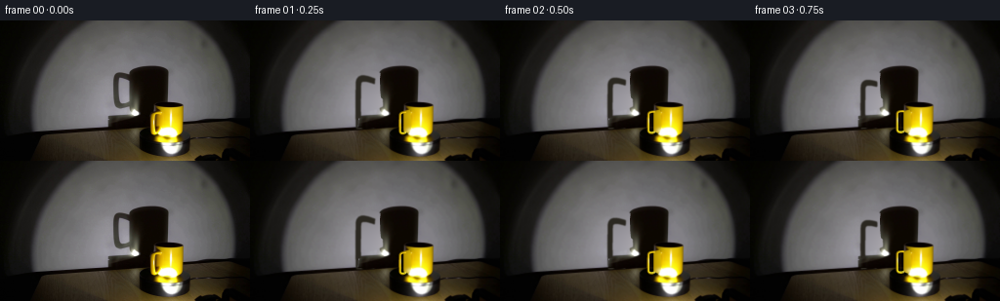
展开代码变化
--- 上一保存版本
+++ 本次保存版本
@@ -30,7 +30,7 @@
# A little of the source wall's optical texture, without inventing objects.
shift=cv2.resize(orig,(WW,HH),interpolation=cv2.INTER_CUBIC).astype(float)
noise=shift-np.stack([gaussian_filter(shift[...,c],2*S) for c in range(3)],2)
-wall=np.clip(wall+noise*.5,0,255)
+wall=np.clip(wall+np.roll(noise,24*S,axis=1)*.20,0,255)
wallmask=gaussian_filter(shpoly,.45*S)
# The existing shadow of the body occludes the handle shadow.
bodyshadow=polygon([(133.7,54),(133,60),(133.3,71),(134,79),(139,83),(142,86),(141.3,93),(136.3,98),(111,100),(110.4,109.7),(131,109.8),(147,108.8),(160,106),(172,104),(172,53),(168,49.5),(159,46.8),(144,46.8),(137,48.4),(134.5,51)])
@@ -68,9 +68,9 @@
# Make a rounded D-shaped tubular handle in the mug's radial vertical plane.
# Local curves are cubic Beziers; the attachment points sit on the cylinder.
-segments=[[(14,22.5),(16,22.7),(18.7,23.2),(19.1,20.5)],
- [(19.1,20.5),(19.3,16),(19.3,8),(19.1,4)],
- [(19.1,4),(18.9,.9),(16,.5),(14,2.0)]]
+segments=[[(14,22.5),(18.3,23.0),(21.6,23.2),(21.9,20.5)],
+ [(21.9,20.5),(22.1,16),(22.1,8),(21.9,4)],
+ [(21.9,4),(21.7,.9),(18,.5),(14,2.0)]]
path=[]
for seg in segments:
a,b,c,d=np.array(seg,float)
@@ -79,7 +79,7 @@
path.append(np.array(segments[-1][-1],float));path=np.array(path)
tan=np.gradient(path,axis=0);tan/=np.linalg.norm(tan,axis=1)[:,None]
rings=16
-phi0=np.deg2rad(-150)
+phi0=np.deg2rad(-137)
def mesh(phi):
u=np.array([np.cos(phi),np.sin(phi),0.])
候选 03播放与检查图
点击播放 · 原生 RGB 像素

展开代码变化
--- 上一保存版本
+++ 本次保存版本
@@ -112,7 +112,7 @@
t=(90-light[1])/(v[:,1]-light[1])
p=light+(v-light)*t[:,None]
center=light+(np.array([0,0,0])-light)*(160/70)
- return np.stack([152+.61*(p[:,0]-center[0]),111.8-.96*p[:,2]],1)
+ return np.stack([150.6+.47*(p[:,0]-center[0]),87.0-.56*p[:,2]],1)
def render(phi):
verts, normals=mesh(phi)
候选 04播放与检查图
点击播放 · 原生 RGB 像素

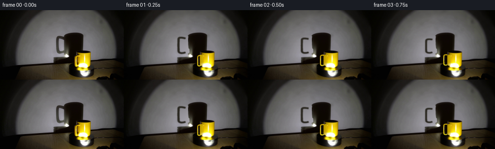
展开代码变化
--- 上一保存版本
+++ 本次保存版本
@@ -112,7 +112,7 @@
t=(90-light[1])/(v[:,1]-light[1])
p=light+(v-light)*t[:,None]
center=light+(np.array([0,0,0])-light)*(160/70)
- return np.stack([150.6+.47*(p[:,0]-center[0]),87.0-.56*p[:,2]],1)
+ return np.stack([147.8+.67*t*v[:,0],87.0-.56*p[:,2]],1)
def render(phi):
verts, normals=mesh(phi)
@@ -189,9 +189,9 @@
if __name__=='__main__':
frames=[orig]
- # 38 degrees per second, clockwise from above, at fixed real-time cadence.
+ # 52 degrees per second, clockwise from above, at fixed real-time cadence.
for i in range(1,20):
- phi=phi0-np.deg2rad(38*i/4)
+ phi=phi0-np.deg2rad(52*i/4)
frames.append(render(phi))
frames=np.stack(frames).astype(np.uint8)
save(frames,ROOT)
候选 05播放与检查图
点击播放 · 原生 RGB 像素
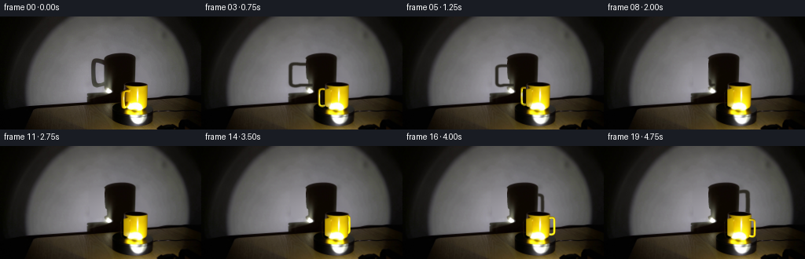
展开代码变化
--- 上一保存版本
+++ 本次保存版本
@@ -89,7 +89,7 @@
N=u*tz+np.array([0,0,-tr])
for a in np.arange(rings)*2*np.pi/rings:
n=N*np.cos(a)+v*np.sin(a)
- radius=1.18
+ radius=1.35
verts.append(u*R+np.array([0,0,z])+radius*n)
normals.append(n)
return np.array(verts),np.array(normals)
@@ -171,6 +171,14 @@
suv=shadowproject(verts)*S
for tri in triangles:
cv2.fillConvexPoly(sm,np.round(suv[tri]).astype(np.int32),255)
+ # The two short handle roots meet the cylinder, so their shadows
+ # terminate in its silhouette rather than floating on the wall.
+ for start in [0,(len(path)-1)*rings]:
+ ring=suv[start:start+rings]
+ xlo,xhi=ring[:,0].min(),ring[:,0].max()
+ ylo,yhi=ring[:,1].min(),ring[:,1].max()
+ pts=np.array([[xlo,ylo],[152*S,ylo],[152*S,yhi],[xlo,yhi]]) if ring[:,0].mean()<152*S else np.array([[152*S,ylo],[xhi,ylo],[xhi,yhi],[152*S,yhi]])
+ cv2.fillConvexPoly(sm,np.round(pts).astype(np.int32),255)
sm=gaussian_filter(sm.astype(float)/255,.57*S)
# Shadow only falls on the wall. Preserve tabletop and its cast shadows.
sm*= (Y<111.1-.033*(X-120))
可观测工具轨迹
实际执行的命令与返回图片。
命令 1exit 0
/bin/bash -lc "ls -la && cat prompt.txt && printf '\\n---RULES---\\n' && cat GENERATION_RULES.md"
命令 2exit 0
/bin/bash -lc "cat artifact_io.py && python - <<'PY'
from PIL import Image
im=Image.open('first_frame.png'); print(im.size);im.resize((1024,576)).save('.tmp/enlarge.png')
PY"命令 3exit 0
/bin/bash -lc "python - <<'PY'
from PIL import Image
im=Image.open('first_frame.png'); im.crop((110,40,201,144)).resize((546,624)).save('.tmp/crop.png')
import importlib.util
for x in ['numpy','scipy','cv2']:
print(x,importlib.util.find_spec(x) is not None)
PY"命令 4exit 0
/bin/bash -lc "python - <<'PY'
from PIL import Image
import numpy as np
im=np.array(Image.open('first_frame.png'))
g=im.mean(2)
for y in [46,48,50,52,54,56,60,70,80,86,90,94,98,102,106,110]:
print(y, 'dark',[(x,round(g[y,x])) for x in range(110,178) if g[y,x]<45][:9], 'values',' '.join(f'{x}:{round(g[y,x])}' for x in [113,116,120,124,128,131,133,135,137,140,150,160,170,175]))
PY"命令 5exit 0
/bin/bash -lc "python - <<'PY'
from PIL import Image,ImageDraw
im=Image.open('first_frame.png').crop((145,80,196,124)).resize((612,528)); d=ImageDraw.Draw(im)
for x in range(145,197):
if x%5==0:
d.line(((x-145)*12,0,(x-145)*12,528), fill=(100,100,120),width=1); d.text(((x-145)*12+2,0),str(x),fill='red')
for y in range(80,124):
if y%5==0:
d.line((0,(y-80)*12,612,(y-80)*12),fill=(100,100,120),width=1);d.text((0,(y-80)*12+2),str(y),fill='red')
im.save('.tmp/grid.png')
PY"命令 6exit 0
/bin/bash -lc "cat > generate.py <<'PY'
from pathlib import Path
import numpy as np
from PIL import Image
import cv2
from scipy.ndimage import gaussian_filter, map_coordinates
from artifact_io import save
ROOT=Path(__file__).resolve().parent
orig=np.asarray(Image.open(ROOT/'first_frame.png').convert('RGB'))
H,W=144,256
S=4
HH,WW=H*S,W*S
hi=cv2.resize(orig,(WW,HH),interpolation=cv2.INTER_CUBIC).astype(float)
Y,X=np.mgrid[:HH,:WW]/S
# Restore just the wall occupied by the initial handle's shadow. The mug's
# cylindrical shadow, the illumination and all the rest of the set stay fixed.
def polygon(points):
m=np.zeros((HH,WW),np.uint8)
cv2.fillPoly(m,[np.round(np.array(points)*S).astype(np.int32)],255)
return m.astype(float)/255
wallarea=(X>99)&(X<133)&(Y>43)&(Y<97)
shpoly=polygon([(119,51),(129,52),(135,55),(136,88),(130,91),(119,93),(114,88),(113.8,62),(115,55)])
valid=wallarea&(shpoly<.1)&~((X>131)&(Y>50))
x=(X-116)/20;y=(Y-72)/25
terms=[np.ones_like(X),x,y,x*x,x*y,y*y,x*x*x,x*x*y,x*y*y,y*y*y]
A=np.stack([t[valid] for t in terms],1)
coeff=np.linalg.lstsq(A,hi[valid],rcond=None)[0]
wall=sum(t[...,None]*c for t,c in zip(terms,coeff))
# A little of the source wall's optical texture, without inventing objects.
shift=cv2.resize(orig,(WW,HH),interpolation=cv2.INTER_CUBIC).astype(float)
noise=shift-np.stack([gaussian_filter(shift[...,c],2*S) for c in range(3)],2)
wall=np.clip(wall+noise*.5,0,255)
wallmask=gaussian_filter(shpoly,.45*S)
# The existing shadow of the body occludes the handle shadow.
bodyshadow=polygon([(133.7,54),(133,60),(133.3,71),(134,79),(139,83),(142,86),(141.3,93),(136.3,98),(111,100),(110.4,109.7),(131,109.8),(147,108.8),(160,106),(172,104),(172,53),(168,49.5),(159,46.8),(144,46.8),(137,48.4),(134.5,51)])
wallmask*=1-bodyshadow
background=hi*(1-wallmask[...,None])+wall*wallmask[...,None]
# Mask for the symmetric cylindrical vessel. Its photographic pixels supply
# the glazing, bright specular stripe, open top and low spotlight reflection.
r=14.9;cx=171.9;cy=115.0;q=.21;height=28.6
bx=X-cx
bodymask=((abs(bx)<r)&(Y>=86.7)&(Y<=112.6))|(((bx/r)**2+((Y-86.7)/3.15)**2)<1)|(((bx/r)**2+((Y-112.6)/4.2)**2)<1)
bodyalpha=gaussian_filter(bodymask.astype(float),.25*S)
# Eliminate the old visible handle. The rear surface is its existing dark
# shadow; reconstruct the small strip of cylindrical yellow glaze beneath it.
oldhandle=polygon([(164,91),(160,92.3),(157,93),(154.6,95),(153.8,99),(154.0,113.2),(154.8,116.8),(158.7,118.2),(162.9,115.0),(165.0,109),(164.6,95)])
oldhandle=gaussian_filter(oldhandle,.45*S)
behind=background.copy()
# Interpolate dark background locally, not from the nearby yellow mug.
for j in range(HH):
yy=j/S
l=int(151*S)
v=background[j,max(0,l-2*S):l].mean(0)
if yy>=110:
v=background[j,149*S:152*S].mean(0)
behind[j,152*S:167*S]=v
# Smooth ceramic texture on the part hidden by the original handle.
shade=np.clip((X-(cx-r))/10,0,1)
ceram=np.stack([181+48*shade,146+48*shade,1+3*shade],axis=2)
ceram*= (1-.10*np.exp(-((Y-91)/3.5)**2))[...,None]
# The stationary floor-level white reflection is preserved from nearby glaze.
ref=np.exp(-((X-167)/6)**2-((Y-113.0)/3)**2)
ceram=ceram*(1-ref[...,None])+np.array([255,254,232])*ref[...,None]
repair=behind*(1-bodyalpha[...,None])+ceram*bodyalpha[...,None]
clean=background*(1-oldhandle[...,None])+repair*oldhandle[...,None]
# Make a rounded D-shaped tubular handle in the mug's radial vertical plane.
# Local curves are cubic Beziers; the attachment points sit on the cylinder.
segments=[[(14,22.5),(16,22.7),(18.7,23.2),(19.1,20.5)],
[(19.1,20.5),(19.3,16),(19.3,8),(19.1,4)],
[(19.1,4),(18.9,.9),(16,.5),(14,2.0)]]
path=[]
for seg in segments:
a,b,c,d=np.array(seg,float)
for t in np.linspace(0,1,35,endpoint=False):
path.append((1-t)**3*a+3*(1-t)**2*t*b+3*(1-t)*t*t*c+t**3*d)
path.append(np.array(segments[-1][-1],float));path=np.array(path)
tan=np.gradient(path,axis=0);tan/=np.linalg.norm(tan,axis=1)[:,None]
rings=16
phi0=np.deg2rad(-150)
def mesh(phi):
u=np.array([np.cos(phi),np.sin(phi),0.])
v=np.array([-np.sin(phi),np.cos(phi),0.])
verts=[];normals=[]
for (R,z),(tr,tz) in zip(path,tan):
N=u*tz+np.array([0,0,-tr])
for a in np.arange(rings)*2*np.pi/rings:
n=N*np.cos(a)+v*np.sin(a)
radius=1.18
verts.append(u*R+np.array([0,0,z])+radius*n)
normals.append(n)
return np.array(verts),np.array(normals)
verts0,normals0=mesh(phi0)
def project(v):
return np.stack([cx+v[:,0],cy-v[:,2]-q*v[:,1]],1)
uv0=project(verts0)
triangles=[]
for i in range(len(path)-1):
for k in range(rings):
a=i*rings+k;b=i*rings+(k+1)%rings;c=(i+1)*rings+k;d=(i+1)*rings+(k+1)%rings
triangles.extend([(a,b,c),(b,d,c)])
triangles=np.array(triangles)
light=np.array([35,-70,4.0])
# Perspective light projection onto the wall, followed by its fixed camera
# projection. It yields a magnified handle and a stationary cylinder shadow.
def shadowproject(v):
t=(90-light[1])/(v[:,1]-light[1])
p=light+(v-light)*t[:,None]
center=light+(np.array([0,0,0])-light)*(160/70)
return np.stack([152+.61*(p[:,0]-center[0]),111.8-.96*p[:,2]],1)
def render(phi):
verts, normals=mesh(phi)
uv=project(verts)
depth=verts[:,1]-q*verts[:,2]
# Ceramic diffuse and narrow white reflections from the low light source.
lv=light-verts;lv/=np.linalg.norm(lv,axis=1)[:,None]
diffuse=np.maximum(np.sum(normals*lv,axis=1),0)
camera=np.array([0,-1,.21]);camera/=np.linalg.norm(camera)
halfv=lv+camera;halfv/=np.linalg.norm(halfv,axis=1)[:,None]
spec=np.maximum(np.sum(normals*halfv,axis=1),0)**24
colors=np.array([246,212,1])[None,:]*(.40+.60*diffuse[:,None])+spec[:,None]*np.array([165,176,175])
light0=light-verts0;light0/=np.linalg.norm(light0,axis=1)[:,None]
diffuse0=np.maximum((normals0*light0).sum(1),0)
relative=(.48+.52*diffuse)/(.48+.52*diffuse0)
rgba=np.zeros((HH,WW,4),float);zbuf=np.full((HH,WW),1e10)
for tri in triangles:
pts=uv[tri]*S
xmin=max(int(np.floor(pts[:,0].min())),0);xmax=min(int(np.ceil(pts[:,0].max())),WW-1)
ymin=max(int(np.floor(pts[:,1].min())),0);ymax=min(int(np.ceil(pts[:,1].max())),HH-1)
if xmax<xmin or ymax<ymin: continue
xx,yy=np.meshgrid(np.arange(xmin,xmax+1)+.5,np.arange(ymin,ymax+1)+.5)
a,b,c=pts
den=(b[1]-c[1])*(a[0]-c[0])+(c[0]-b[0])*(a[1]-c[1])
if abs(den)<1e-7: continue
wa=((b[1]-c[1])*(xx-c[0])+(c[0]-b[0])*(yy-c[1]))/den
wb=((c[1]-a[1])*(xx-c[0])+(a[0]-c[0])*(yy-c[1]))/den
wc=1-wa-wb
weights=np.stack([wa,wb,wc],-1)
zd=weights@depth[tri]
sel=(weights.min(-1)>=-.0001)&(zd<zbuf[ymin:ymax+1,xmin:xmax+1])
# Test front cylinder intersections in the same oblique camera rays.
dx=xx/S-cx
df=-np.sqrt(np.maximum(0,r*r-dx*dx))
zz=cy-yy/S-q*df
cyl= (np.abs(dx)<r)&(zz>=0)&(zz<=height)
bodydepth=df-q*zz
sel &= ~(cyl&(zd>bodydepth-.15))
# top cap
dc=(cy-height-yy/S)/q
cap=(dx*dx+dc*dc<r*r)&(dc>=df)
sel &= ~(cap&(zd>dc-q*height))
if not sel.any():continue
col=weights@colors[tri]
src=weights@uv0[tri]
texture=np.stack([map_coordinates(orig[:,:,cc].astype(float),[src[...,1],src[...,0]],order=1,mode='nearest') for cc in range(3)],-1)
# Retain photographic ceramic detail where initial projection actually
# hits the yellow handle, rather than the hole or the background.
yellow=(texture[...,0]>100)&(texture[...,1]>75)&(texture[...,0]>texture[...,2]+45)
rel=weights@relative[tri]
col[yellow]=.75*texture[yellow]*rel[yellow,None]+.25*col[yellow]
rgba[ymin:ymax+1,xmin:xmax+1,:3][sel]=np.clip(col[sel],0,255)
rgba[ymin:ymax+1,xmin:xmax+1,3][sel]=1
zbuf[ymin:ymax+1,xmin:xmax+1][sel]=zd[sel]
sm=np.zeros((HH,WW),np.uint8)
suv=shadowproject(verts)*S
for tri in triangles:
cv2.fillConvexPoly(sm,np.round(suv[tri]).astype(np.int32),255)
sm=gaussian_filter(sm.astype(float)/255,.57*S)
# Shadow only falls on the wall. Preserve tabletop and its cast shadows.
sm*= (Y<111.1-.033*(X-120))
sm*=1-bodyshadow
sm*=1-bodyalpha
# Ambient transmitted room light gives the handle shadow a soft brown tone.
shadecol=np.array([43,40,33],float)
image=clean*(1-sm[...,None])+shadecol*sm[...,None]
a=gaussian_filter(rgba[:,:,3],.16*S)
rgb=rgba[:,:,:3]
# fill subpixel edge colors before antialiasing
for cc in range(3):
rgb[:,:,cc]=gaussian_filter(rgb[:,:,cc],.16*S)/np.maximum(a,1e-6)
image=image*(1-a[...,None])+rgb*a[...,None]
return np.clip(cv2.resize(image,(W,H),interpolation=cv2.INTER_AREA),0,255).astype(np.uint8)
if __name__=='__main__':
frames=[orig]
# 38 degrees per second, clockwise from above, at fixed real-time cadence.
for i in range(1,20):
phi=phi0-np.deg2rad(38*i/4)
frames.append(render(phi))
frames=np.stack(frames).astype(np.uint8)
save(frames,ROOT)
Image.fromarray(render(phi0)).save(ROOT/'.tmp'/'render_zero.png')
Image.fromarray(np.clip(cv2.resize(clean,(W,H),interpolation=cv2.INTER_AREA),0,255).astype(np.uint8)).save(ROOT/'.tmp'/'clean.png')
PY
python generate.py"命令 7exit 0
/bin/bash -lc "python - <<'PY'
import generate as g
from PIL import Image
import numpy as np
Image.fromarray(np.uint8(np.clip(g.wall,0,255))).resize((1024,576)).save('.tmp/wall.png')
for y in [54,60,70,80,88]:
print(y, [(x,np.round(g.wall[y*4,x*4],1).tolist(),np.round(g.background[y*4,x*4],1).tolist(),round(g.wallmask[y*4,x*4],2)) for x in [114,116,118,120,122,130]])
PY"命令 8exit 0
/bin/bash -lc "python - <<'PY' import generate as g import numpy as np for a in [-150,-160,-180,-200,-240,-290,-330]: v,n=g.mesh(np.deg2rad(a)); sp=g.shadowproject(v);p=g.project(v) print(a, 'actual',p.min(0),p.max(0),'shadow',sp.min(0),sp.max(0)) PY"
命令 9exit 0
/bin/bash -lc "python - <<'PY'
p='generate.py'
s=open(p).read().replace('wall=np.clip(wall+noise*.5,0,255)','wall=np.clip(wall+np.roll(noise,24*S,axis=1)*.20,0,255)')
s=s.replace('[(14,22.5),(16,22.7),(18.7,23.2),(19.1,20.5)]','[(14,22.5),(18.3,23.0),(21.6,23.2),(21.9,20.5)]').replace('[(19.1,20.5),(19.3,16),(19.3,8),(19.1,4)]','[(21.9,20.5),(22.1,16),(22.1,8),(21.9,4)]').replace('[(19.1,4),(18.9,.9),(16,.5),(14,2.0)]','[(21.9,4),(21.7,.9),(18,.5),(14,2.0)]').replace('np.deg2rad(-150)','np.deg2rad(-137)')
open(p,'w').write(s)
PY
python generate.py"命令 10exit 0
/bin/bash -lc "python - <<'PY' import generate as g import numpy as np v,n=g.mesh(g.phi0);sp=g.shadowproject(v) print(sp.min(0),sp.max(0)) for i in [0,34,35,69,70,104]: print(i, g.path[i],sp[i*16:(i+1)*16].mean(0),g.project(v)[i*16:(i+1)*16].mean(0)) PY"
命令 11exit 0
/bin/bash -lc "python - <<'PY'
p='generate.py';s=open(p).read().replace('152+.61*(p[:,0]-center[0]),111.8-.96*p[:,2]','150.6+.47*(p[:,0]-center[0]),87.0-.56*p[:,2]');open(p,'w').write(s)
PY
python generate.py"命令 12exit 0
/bin/bash -lc "python - <<'PY' import generate as g import numpy as np for a in [-137,-180,-220,-280,-320,-350,-380]: v,n=g.mesh(np.deg2rad(a));sp=g.shadowproject(v) print(a,sp.min(0),sp.max(0)) PY"
命令 13exit 0
/bin/bash -lc "python - <<'PY' import generate as g import numpy as np for a in [-137,-180,-320,-350,-365]: v,n=g.mesh(np.deg2rad(a));t=160/(v[:,1]+70);x=152+.61*(t*v[:,0]);print(a,x.min(),x.max()) PY"
命令 14exit 0
/bin/bash -lc "python - <<'PY'
p='generate.py';s=open(p).read().replace('150.6+.47*(p[:,0]-center[0]),87.0-.56*p[:,2]','147.8+.67*t*v[:,0],87.0-.56*p[:,2]').replace('38 degrees per second','52 degrees per second').replace('38*i/4','52*i/4');open(p,'w').write(s)
PY
python generate.py"命令 15exit 0
/bin/bash -lc 'command -v ffmpeg || true'
命令 16exit 0
/bin/bash -lc "python - <<'PY'
p='generate.py';s=open(p).read().replace('radius=1.18','radius=1.35');s=s.replace('sm=gaussian_filter(sm.astype(float)/255,.57*S)', '''# The two short handle roots meet the cylinder, so their shadows
# terminate in its silhouette rather than floating on the wall.
for start in [0,(len(path)-1)*rings]:
ring=suv[start:start+rings]
xlo,xhi=ring[:,0].min(),ring[:,0].max()
ylo,yhi=ring[:,1].min(),ring[:,1].max()
pts=np.array([[xlo,ylo],[152*S,ylo],[152*S,yhi],[xlo,yhi]]) if ring[:,0].mean()<152*S else np.array([[152*S,ylo],[xhi,ylo],[xhi,yhi],[152*S,yhi]])
cv2.fillConvexPoly(sm,np.round(pts).astype(np.int32),255)
sm=gaussian_filter(sm.astype(float)/255,.57*S)''');open(p,'w').write(s)
PY
python generate.py"命令 17exit 0
/bin/bash -lc "python - <<'PY'
import numpy as np
from PIL import Image
x=np.load('pixels.npz')['pixels']
p=np.array(Image.open('first_frame.png')).astype(np.uint32)
assert x.shape==(144,256,20)
assert np.array_equal(x[:,:,0],p[:,:,0]*65536+p[:,:,1]*256+p[:,:,2])
print('Validated: 20 RGB frames, 256Ã144, first frame identical.')
PY"视觉工具实际返回图片 1
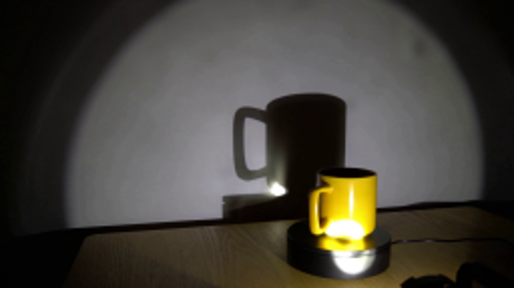
视觉工具实际返回图片 2
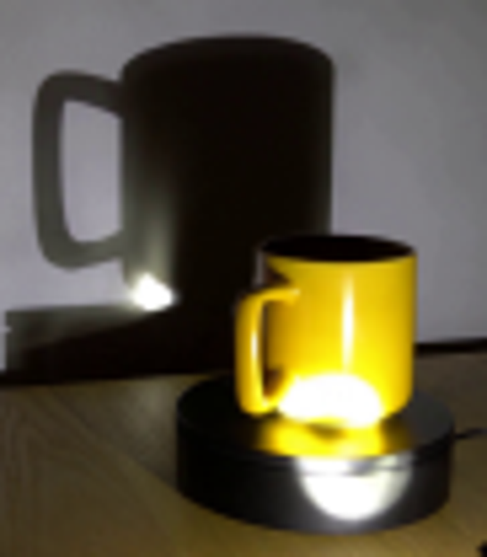
视觉工具实际返回图片 3
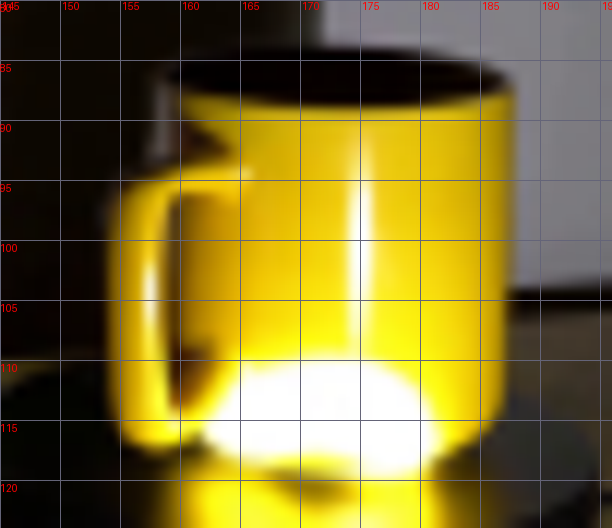
视觉工具实际返回图片 4

视觉工具实际返回图片 5
视觉工具实际返回图片 6
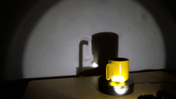
视觉工具实际返回图片 7
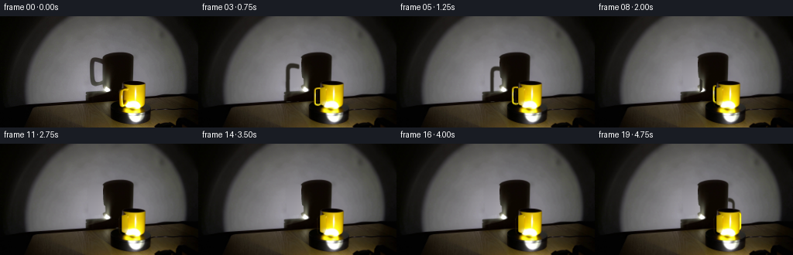
视觉工具实际返回图片 8
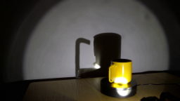
视觉工具实际返回图片 9
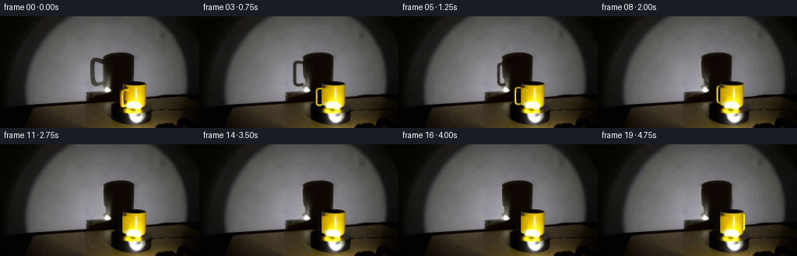
视觉工具实际返回图片 10
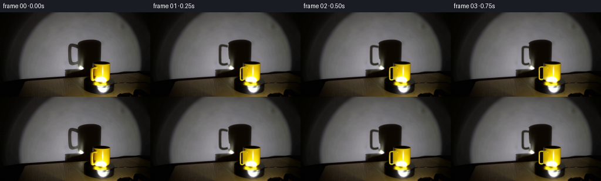
视觉工具实际返回图片 11
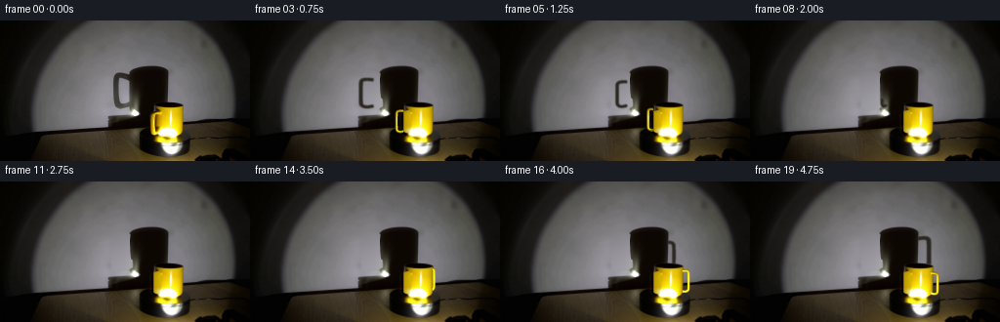
保存候选 5 份；完成命令 17 次；可验证图片返回 11 张。原始 API 响应与完整日志保留在本地。